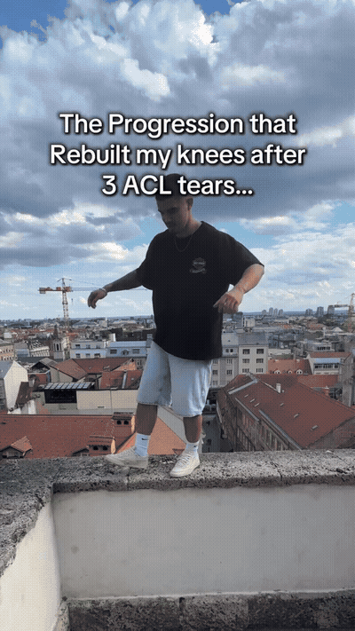
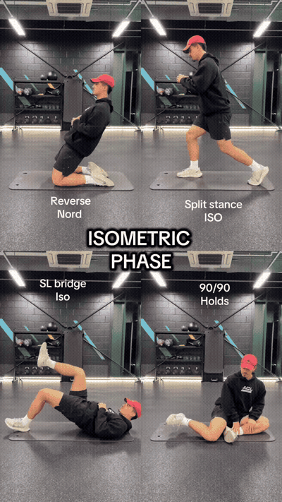
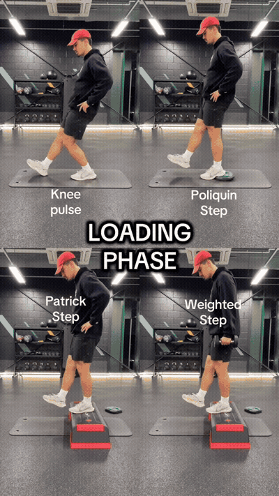
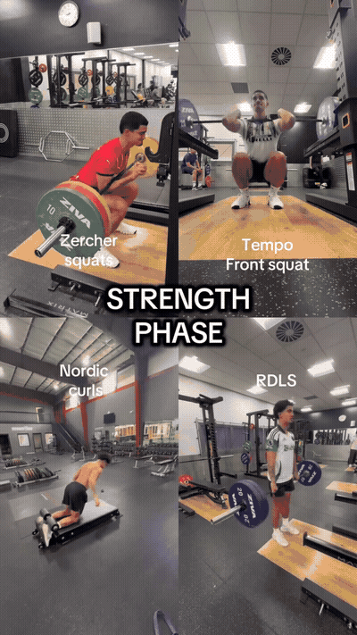

Isometric holds to re-establish control and tolerance at the knee before any movement load: reverse nordics, split-stance ISO, single-leg bridge ISO, and 90/90 holds.

Begin loading the knee with step-ups and pulses: knee pulses, Poliquin step, Patrick step, and weighted step.

Full strength work for the posterior chain and quads: Zercher squat, tempo front squat, nordic curls, and RDLs.

Rebuild reactive power: pogos, assisted pogos, single-leg box jumps, and lateral drop jumps.